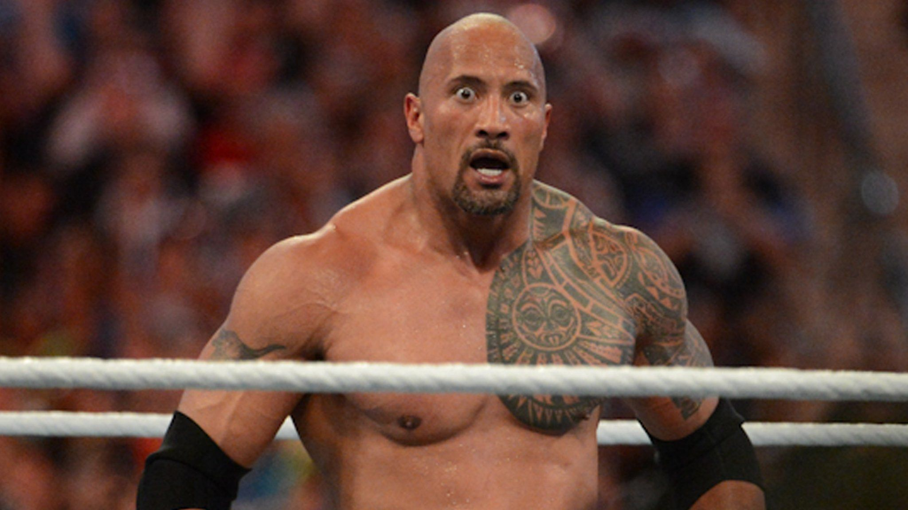
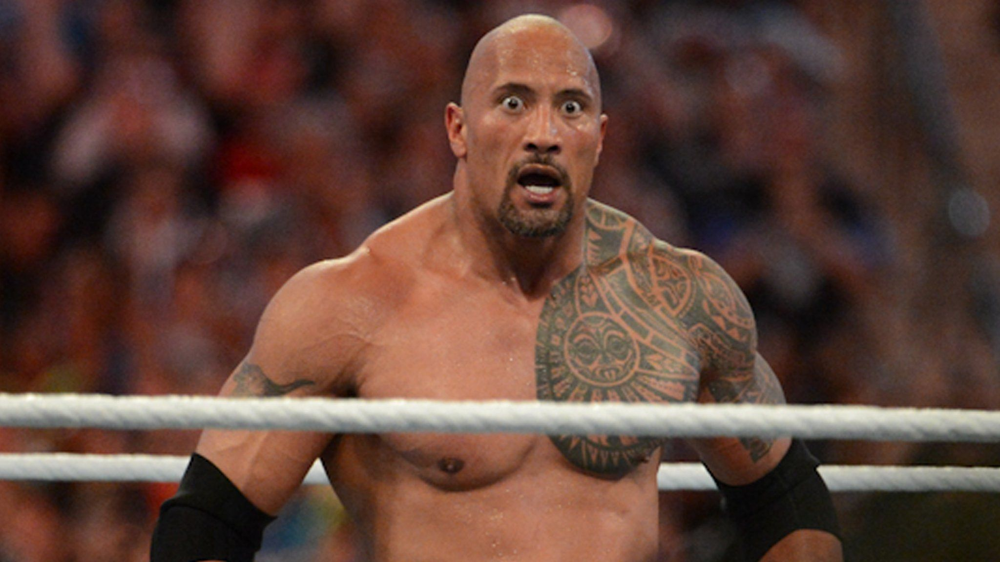
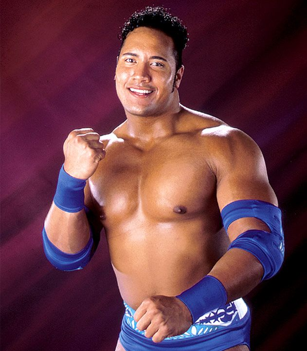
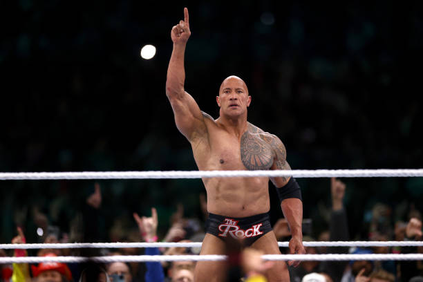
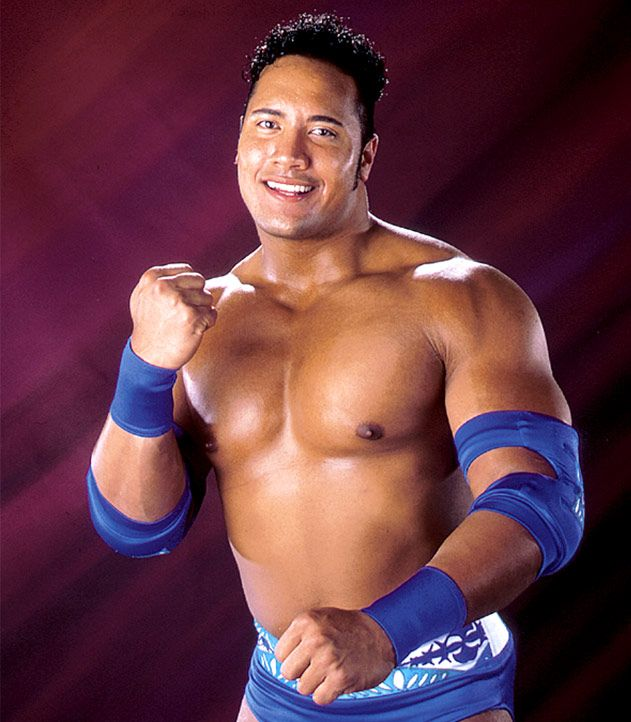
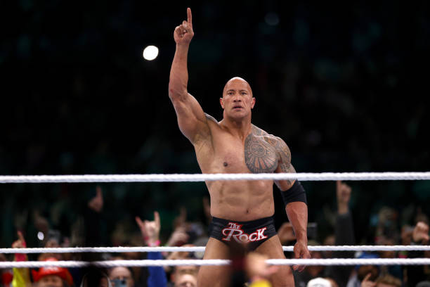

Hola, me llamo Dwayne Douglas Johnson, aunque la mayoría de la gente me conoce como "The Rock". Nací el 2 de mayo de 1972 en Hayward, California, en el seno de una familia de luchadores profesionales: mi padre, Rocky Johnson, y mi abuelo paterno, Peter Maivia, me inspiraron desde pequeño. Crecí con el amor por el deporte y la disciplina que exige la lucha libre, aunque mis primer os años estuvieron marcados por desafíos y cambios frecuentes de residencia. Durante mi juventud me dediqué al fútbol americano y llegué a jugar universitariamente en la Universidad de Miami, donde formé parte del equipo que ganó el campeonato nacional en 1991. Sin embargo, mis planes de convertirme en jugador profesional no se materializaron completamente, y eso me llevó a explorar otras oportunidades, siguiendo la tradición familiar en la lucha libre. Comencé mi carrera como luchador profesional en la WWE, y pronto descubrí que mi carisma y dedicación me permitían conectar con el público de manera única. Mi personaje, "The Rock", me llevó a convertirme en uno de los luchadores más populares y reconocibles, y durante años gané campeonatos que me consolidaron como una leyenda en el ring. Más allá de la lucha, siempre soñé con el cine. Poco a poco fui abriéndome camino en Hollywood, comenzando con papeles en películas como The Scorpion King y consolidándome como una estrella de acción y comedia con franquicias como Fast & Furious y Jumanji. Paralelamente, emprendí negocios, desde mi propia productora hasta proyectos en tequila y fitness, buscando siempre inspirar y motivar a otros a alcanzar sus metas. A lo largo de mi vida, he aprendido la importancia del trabajo duro, la resiliencia y la autenticidad. Cada desafío que enfrenté, cada obstáculo que superé, me fortaleció y me hizo valorar la familia, los amigos y mis raíces samoanas y canadienses. En resumen, vivo la vida con pasión y determinación, buscando dejar un impacto positivo en el mundo a través del entretenimiento, el deporte y mi ejemplo personal, siempre recordando de dónde vengo y hacia dónde quiero ir.
 

 


